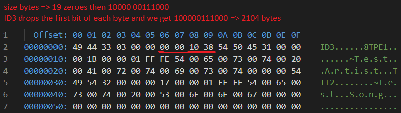

ID3
Exploring the world of mp3 metadata
February 2022
MP3s don't have metadata built into the specification. Instead there's an ID3 tag at the beginning of each MP3 that provides metadata. One interesting thing about ID3 is that there is a spec, but it's informal. It's more detailed than a set of guidelines but not as stringent as a formal specification. Lots of music players don't parse every field described in the spec. In fact, the spec leaves room for plenty of custom fields - implying that a player can't be expected to properly parse every ID3 field it sees.
ID3v2 is the de facto MP3 tagging standard, and versions 2.3 and 2.4 are the most common. 2.3 and 2.4 aren't all too different but 2.4 is less widely supported - even though both came out within a couple years from 1999-2001.
The basic structure of an ID3v2.3 tag is this:
- Header
- 3 characters: "ID3", flag bytes, version bytes, total tag size
- Body
- Series of frames, each with a frame header and frame data
- Padding
- Padding is included so that if more tag data is added, it's less likely that the file needs to be resized - which is time consuming and tag editing is often done in bulk
Frames are made up of a short header and a data body:
-
Header
- Four bytes/characters for frame ID, e.g. TALB, APIC
- Four bites for frame size
- Two bytes for flags
- Data bytes
To demonstrate these basics, I made a tag with only a song title and artist:

The artist is "Test Artist" (TPE1) and the title is "Test Song" (TIT2).
I've yet to figure out why the text fields start with 01.
If you know your character encodings, you might've figured out that this tag is in UTF-16.
The spec doesn't mention anything about encodings but for whatever reason 2.3 uses either UTF-16 or ISO-8859-1 and 2.4 uses UTF-8.
The tag size is 2104 bytes - the tag body is only 68 bytes but extra padding is included by the tagger I used (Mp3tag).
(I'm using the hexdump for VSCode extension to view the bytes)